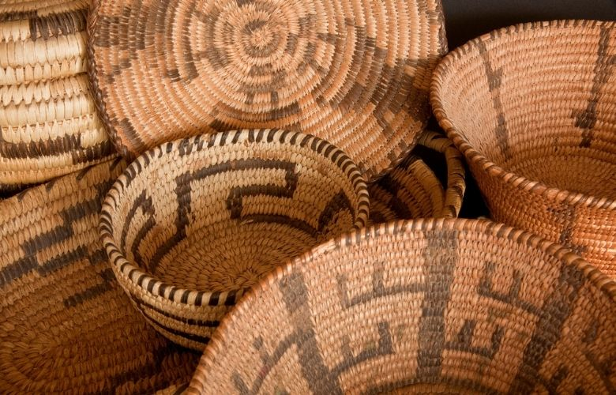

O artesanato indígena está arraigado na cultura brasileira. Com tantos anos de história e tradição não poderia ser diferente. Os índios produzem até hoje diversas peças artesanais que são bastante procuradas para a decoração de lares por causa de seu aspecto meticuloso, único e bem trabalhado. Uma peça do artesanato indígena no décor provoca um contato maior com a natureza devido aos materiais naturais que são utilizados em sua fabricação.
A cestaria indígena é uma forma tradicional de artesanato praticada por diversas comunidades indígenas, caracterizada pela criação de cestos e outros objetos trançados a partir de fibras naturais como palha, cipó e bambu.
Este artesanato não só serve a propósitos utilitários, como armazenamento e transporte, mas também possui grande valor cultural e estético.Cada peça de cestaria indígena reflete a identidade e a habilidade dos artesãos, além de transmitir histórias e tradições ancestrais.
Fazer cestaria indígena envolve uma série de técnicas tradicionais passadas de geração em geração. O processo começa com a coleta e preparo das fibras naturais, que são então trançadas manualmente em padrões específicos e intricados.A habilidade manual e o conhecimento das plantas utilizadas são essenciais para criar peças duráveis e bonitas.
Quando se pensa em peças de artesanato os cestos indígenas são uma das primeiras lembradas. E isso não é à toa: os cestos indígenas são produzidos por diversas de suas etnias há muito tempo e cada uma delas tem um jeito próprio de fazer o trançado, o que gera um aspecto bastante único e pessoal ao produto. Cada detalhe revela um pouco da cultura daquele determinado povo. Os cestos indígenas são confeccionados para realizar as mais diversas finalidades nas tribos. Para auxiliar na cozinha, por exemplo, os cestos indígenas servem como coador para líquidos ou peneira para farinhas. Eles também armazenam frutos, pescados e alimentos básicos de sua dieta, como a mandioca.
Ao contrário do que se pensa, em algumas tribos os cestos indígenas são fabricados pelos homens, mas quem costuma utiliza-los são as mulheres. Em outras o trabalho é igualmente dividido.
Matérias-primas naturais: Os indígenas utilizam fibras vegetais retiradas da floresta, como o algodão cultivado por algumas etnias, além de palhas e cipós.
Técnicas manuais: A tecelagem pode ser feita com teares rústicos, como os usados pelos povos do Xingu, ou diretamente com as mãos e ferramentas simples.
Fins utilitários e rituais: Tecidos e tramas são usados para fazer redes, vestimentas, cestos, bolsas e até enfeites corporais. Padrões e significados: Muitas peças trazem grafismos simbólicos que representam mitos, histórias e elementos da natureza.
Diversidade cultural: Cada povo tem suas próprias técnicas e estilos. Por exemplo, os Waimiri-Atroari produzem redes finas e resistentes, enquanto os Kayapó tecem belas faixas coloridas. A tecelagem indígena não é apenas uma habilidade artesanal, mas um conhecimento ancestral passado de geração em geração. Além disso, algumas comunidades estão resgatando e comercializando seus produtos para valorizar sua cultura e garantir renda.